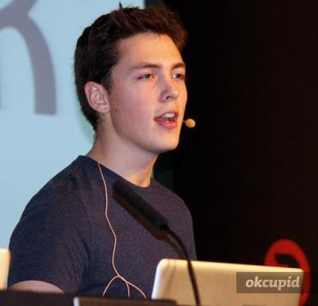

-

Jeremy Ashkenas
Creator of CoffeeScript & Backbone.js
http://documentcloud.org
Jeremy Ashkenas works on the Interactive News team at the New YorkTimes, and at DocumentCloud.org, helping news organizations analyze and publish the primary source documents behind the news. He created CoffeeScript, Backbone.js, Underscore.js, Docco and Jammit, among other open-source projects.
-

Alex MacCaw
Ruby/JavaScript developer & entrepreneur. Creator of SpineJS
http://blog.alexmaccaw.com/
Ruby/JavaScript developer & entrepreneur. O’Reilly writer and open source developer. Working for Twitter.
-

Vicent Marti
Working at GitHub. Intergalactic MC & Developer. Mainly european.
https://github.com/tanoku
Vicent Marti has a name which is difficult to pronounce. Despite his main occupation as intergalactic MC, he spends his spare time working full time at GitHub, where he builds tools for the people who build the Internet.
There, he maintains The Library, wrecks occasional havoc on the backend and evangelizes what he believes is beautiful technology. As an European citizen (Spain, according to his passport), Vicent enjoys drums and yellow things and the sweet, sweet smell of civilization.
-
Karolina Szczur
Designer and front end developer working at Nodejitsu.
http://dribbble.com/karolinaszczur
Designer and front-end developer with over 7 years of experience. Currently UX Designer at Nodejitsu, previously worked for such companies as XHTMLized, Applicake or AdTaily. Coordinator and coach at WebMuses community helping women gain knowledge in programming, caring about Open Standards by being core contributor of "Otwarta sieć" (Open Web) project which goal is to show what you can achieve with HTML5/CSS3 (Polish only). Already gave few talks considering UX, mobile and front-end development.
-
Jakob Mattsson
A developer of business, people and software. Currently he is VP of Engineering at Burt.
http://jakobmattsson.tumblr.com/
Jakob is head of engineering at Burt, the Swedish software startup helping publishers and advertisers become more clever and creative with data. It is challenging and complex things that get most of his attention. Professionally this has included leading a technology consultancy firm and starting a few companies in software development and recruitment. But he is a developer at heart, regardless the occupation. Although he is currently focusing on web development and the finer details of JavaScript the journey actually started off with C++ and game development. Lately he has also been sharing his thoughts on advances in programming languages, working in startups and getting things done in software development at a number of universities and conferences, including ScanDev, Nordic Ruby and JSConf. Jakob occasionally blogs at jakobmattsson.se and tweets at @jakobmattsson.
-
Christian Kvalheim
Evangelist and developer. Author of the Node.js MongoDB driver. Currently working at 10gen.
http://christiankvalheim.com/
I wrote the MongoDB node.js driver and have been active in the community since the beginning. I currently work fulltime for 10gen on the node.js driver and other driver stuff.
-

Horia Dragomir
UI Developer, hungry & foolish. Currently working at Wooga.
http://hdragomir.com/
Horia Dragomir is a UI Developer, currently working at wooga in Berlin, where he focuses on developing HTML5 Mobile games. He has spent the better part of his working days in distributed teams, employing agile methods and discovering better ways for teams to work together.
-

Guillermo Gutiérrez
Programmer and software craftsman at BuntPlanet.
http://www.nianoniano.com/
During the last 10 years, I've been working in small companies mainly and I've had the privilege of participating in the construction of Fon, the largest wi-fi network in the world, currently with more than 2 million nodes.
I organize events such as Katayunos and Merendojos in the Basque Country and Navarra. I am currently interested in bringing the good practices and methodologies from the server-side to the frontend, in building agile teams and other topics like continuous delivery or devops.
-

Ramón Corominas
Not-only-accessibility specialist: Pursuing happiness through -good- User eXperience. W3C's WCAG WG member.
http://ramoncorominas.com/
I work as accessibility consultant at @Technosite (Fundación ONCE) since 2008, involved in a wide range of projects (both national and international), covering a variety of topics such as accessibility audits and consultancy, delivering training or developing new evaluation methodologies.
For example, I've given training and consultancy for the European Commission, EFSA, Vodafone, Cap Gemini, Iberdrola, UPC, etc. I'm also a member of the AENOR working group in charge of the development of the new UNE regulation about Web accessibility in Spain, and I've recently joined the W3C's WCAG WG.
-

Daniel de la Mata Lara
Rails and Node.js developer.
http://danimataonrails.blogspot.com.es/
I am 37. I work mostly with Ruby on Rails and NodeJs. I love running, kickboxing and crossfit. The best projects I've done are called Hugo & Samuel. But they need daily maintennace.